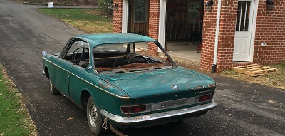
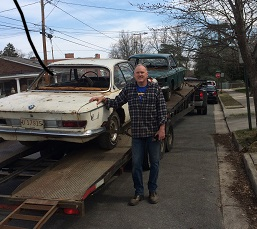
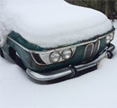
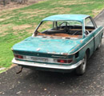
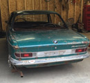
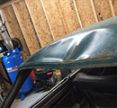
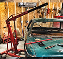
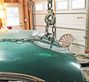
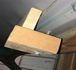
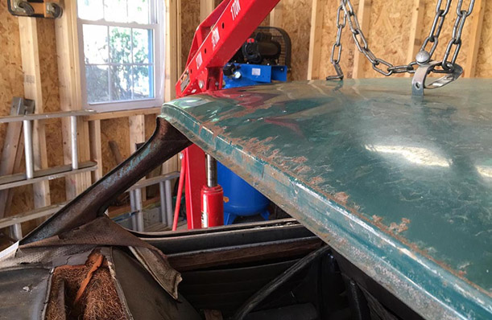

January 2016 - A New Garage Home
click images to enlarge
2014

I purchased this 1966 BMW 2000c in early 2014. At that time I was finishing a 1975 BMW 2002 restoration, and so the 2000c just sat in my back yard under a waterproof tarp. Late in 2014, I got married, sold my house and bought a new home with my bride 50 miles up to the road which put off tackling the 2000c well into 2015. I had the car and a second 2000cs parts car trailered up to my new home whereby the cars continue to sit, under cover outside.

It bothered me the car continued to sit out in the elements. It was obvious that the car had sat uncovered with years of water invasion from above. The slow drip of water is the death of these cars.
2015
I built a 2½ bay separate garage next to my house in the November 2015. I Installed and plumbed a 15 cfm/90 psi 60 gallon air compressor as well.
2016

With the New Year 2016 I rolled the 2000c down the slight slope towards the new garage. The car has no brakes but it rolled near enough to the main doors where I could jostle it back and forth pushing and pulling manually, turning the stearing wheel as needed, until I could to winch it into the garage. Success! Let the excitement begin!

Once in the garage, I jacked the car up and lowered it into casters for ease of movement within the garage.
Pulling That Horrendous Dent

It dawned on me that I could deal with the horrendous dent damage on the rear portion of the roof before I mount the car on the rotisserie. This car seemingly abandoned was a victim of vandal assholes. Some suckhole must have struck the rear window area with something very heavy, like a steal post, several times and with great force. The damage is bad.
The only way to pull that dramatic and deep type of dent out is to use the car’s own weight countered by something as equally powerful in the opposite 
direction. This is beyond the body pulling hammer stage. Eureka. The engine hoist.
I drilled a substantial hole for a sturdy bolt combined with some creative blocking in the deepest area of the dent. I configured the bolt to the engine hoist.
I began to pump the handle of the hoist up and down as I watched the boom rise. I winced wondering if this would work, or would I rip a hole in the roof. As 
I worked the hoist handle up and down, I heard the roof sheet metal come to life. A subtle “creak” here and a slight “moan” there, ….and then…. a loud “bang” or “pop” as the metal bounced backtowards its original shape. Amazing! It worked!
I drilled a few smaller holes for follow up pulls to get the shape back closer to its original form.

I did not have a rear window at the time to confirm I had reach the proper shape. I was close enough though that any furtherwork could be done by a traditional pulling hammer.

{kind=link}
{kind=link}
{kind=link}
{kind=link}
{kind=link}
{kind=link}
{kind=link}
{kind=link}